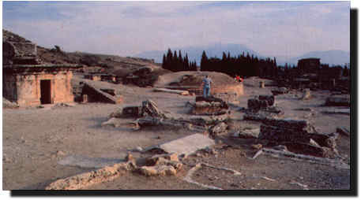

Ana Cadde ve Kapýlar: Yaklaþýk 1 km uzunluðundaki kentin önemli ve geniþ ana
caddesi, kenti bir ucundan diðer ucuna ikiye böler. Kuzey-güney doðrultusunda
uzanan bu caddenin iki tarafýnda sütunlu revaklar ve önemli kamu yapýlarý vardýr.
Her iki ucunda anýtsal kapýlar bulunmaktadýr. Bu kapýlar ve caddenin büyük bölümü
Roma döneminde inþa edildiðinden Bizans surunun dýþýnda kalmaktadýr. Güneyinde
MS V. yüzyýla tarihlenen "Güney Bizans Kapýsý" vardýr. En kuzeyde, iyi korunmuþ,
üç gözlü ve iki yanýnda yuvarlak kuleleri olan kapýnýn frizinde Ýmparator
Domitian'a ithaf edilmiþ Latince ve Grekçe yazýlmýþ bir yazýt vardýr. Bu yazýttan
dolayý buna Domitian Kapýsý veya Roma Kapýsý denir. Kapýnýn Asya Prokonsülü
Wulius sextus Frontinus tarafýndan MS 82-83 yýllarýnda yaptýrýldýðý bilinmektedir.
Bu nedenle kapýya Frontinus Kapýsý da denilmektedir. Bu kapýdan güneye inen
yolun surla kesiþtiði yerde MS V. yüzyýlda tarihlenen "Kuzey Bizans Kapýsý"
bulunmaktadýr.

Surlar: MS V. yüzyýl sonunda, Roma Ýmparatorluðu'nun diðer kentleri gibi,
Hierapolis'de MS 396'daki bir kanuna göre, kuzey, güney ve doðu yönlerinde
surlarla çevrilmiþtir. Devþirme malzeme ile yapýlan surlar hemen hemen
Hellenistik kentin alanýný kapsar. Büyük kýsmý bugün yýkýlmýþ halde olan
surlara 24 adet kare planlý kule yerleþtirilmiþtir. Ýki anýtsal kapý ve iki
küçük kapý, giriþleri belirler. Kuzey ye güney anýtsal kapýlarý ana caddeye
açýlýr.
Büyük Hamam Kompleksi: Bugün, masif duvarlarý ve bazý tonozlarý ayakta kalabilmiþ
olan yapýnýn iç mekanlarýnýn mermerle kaplý olduðuna dair izler bulunmaktadýr.
Hamamýn planý diðer tipik Roma hamamlarý gibidir. Önce giriþte büyük avlu, iki yanýnda büyük holler bulunan kapalý dikdörtgen bir alan ve
daha sonralarý bulunan esas hamam yapýsý yer alýr. Havuzlu odalarda geniþ
ve büyük pencereler vardýr. Palaestra'nýn yan kanatlarýnda, biri güneyde
diðeri kuzeyde olan iki büyük hol imparatora ve törenlere ayrýlmýþtýr. Palaestra
boyunca uzanan geniþ bir salon ise, atletizm ve jimnastik için kullanýlmýþ
olmalýdýr.
Hamam kompleksinin kalýntýlarý MS II. yüzyýla tarihlenir. Büyük hole bitiþik
tonozlu kapalý mekanlar günümüzde müze olarak kullanýlmaktadýr.
Su Kanallarý ve Nymphaeumlar: Çevredeki tepelere inþa edilmiþ kanallardan
oluþaniki aquadükt kente içme suyunu saðlamaktadýr. Bunlardân
biri küzeyde Pamukkale ve Karahayýt arasýnda, diðeri doðuda Güzelpýnar
yönündedir. Bugün halen üstlerini kapatan taþ plakalar görülebilmektedir.
Bu kanallar kentin doðusundaki tepenin üstünde inþa edilmiþ bir filtre
odasýnda birleþmektedir. Buradan, çýkan su piþmiþ toprak künkler ile kent
sokaklarýna, oradan da daha küçük çaplý künklerle evlere ulaþmaktadýr.
Apollon Tapýnaðý: Mevcut tapýnak, eski ve dini maðara olarak bilinen
Plutonion
üzerine kurulmuþtur. Yerli halkýn en eski dini merkezi olan bu yerde, Apollon,
bölgenin Ana Tanrýçasý Kybele ile buluþmuþtur. Eski kaynaklar, Ana Tanrýça Kybele
rahibinin bu maðaraya indirildiði ve zehirli gazdan etkilenmediðini bildirirler.
Apollon Tapýnaðýnda üst yapýya ait kalýntýlar MS III. yüzyýldan geriye
gitmemekle birlikte, temeller Geç Hellenistik döneme kadar uzanmaktadýr.
Yaklaþýk 20mx15m boyutundaki bu yapýnýn mimari elemanlarý büyük ölçüde eksik
olduðundan yeterli bilgi vermemektedir. Tapýnak alanýna geniþ basamaklarla
çýkýlýr. Pronaos ve cellasý mevcut olan tapýnaðýn önünde duvarla çevrili bir
koruma alaný (peribolos'u) vardýr.
Tiyatro: Grek tiyatrosu tipinde yamaca yaslanmýþ 300 ayak (91 m)
tüm cephesiyle
birlikte korunabilen büyük bir yapýdýr. Ýnþasýna; MS 60 yýlýnda olan büyük
depremin ardýndan Flaviuslar döneminde MS 62 yýlýnda baþlanmýþtýr. Hadrian
döneminde (MS 117-138) inþa halindedir. Yapý Severuslar döneminde MS 206 yýlýnda
tamamlanmýþtýr. Cavea'da 50 oturma sýrasý bulunur ve 8 merdivenle
7 bölüme ayrýlmýþtýr. Cavea'nýn tam ortasýndan geçen Diozoma'ya her iki
yandan tonozlu birer geçit ile (vomitoryum) girilir. Cavea'nýn ortasýnda yer
alan krallýk locasý ve orkestrayý çevreleyen 6 ayak (3.66 m) yüksekliðindeki
sahne ön duvarýnda 5 kapý ve 6 niþ bulunmakta, bunlarýn önünde 10 adet sütun
bulunmaktadýr.Mermer sütunlarýn üzerleri istiridye kabuðu þeklinde motiflerle
dekore edilmiþtir. Sahnenin gerisinde arka duvarý süsleyen üst üste sýralanmýþ
3 sütun dizisinden, alttakiler sekizgen kaideler üzerinde yükselir ve yivsizdir.
Sütunlarýn arasý heykellerle süslenmiþ olup, burada yapýlan kazýlar sýrasýnda bol
miktarda heykel bulunmuþtur. Bu sütunlarýn arkasýnda katlý plakalardan oluþan kabartmalý
frizler yer alýr.
St.Philip Martyriumu: MS IV. yüzyýl sonuna veya V. yüzyýl baþýna ait oktogonal
(sekizgen) bir yapý olan Martyrium, 20mx20m ölçüsünde kare planlý yapýlmýþtýr.
St.Philip'in Hierapolis'te þehit edildiði kabul edilerek onun anýsýna anýt mezar
olarak inþa ettirilmiþtir. Hristiyanlýðýn resmi din oluþundan sonra halkýn büyük
ilgisini çeken yerlerden biri olmuþtur.
Kiliseler:Kent merkezinde, VI.yüzyýla ait bir Katedral, "Direkli Kilise" ile
iki kilise daha vardýr. Ayrýca MS VI.yy baþýnda Büyük Hamam Kompleksinin merkezi
holü kiliseye dönüþtürülmüþtür. Kuzey bölgesinde de küçük þapeller mevcuttur.
Nekropol: Kent surlarýnýn ve ova dýþýndaki tüm yönlerde nekropol alanlarý
bulunmaktadýr. Bunlar yoðunlukla Tripolis-Sardes'e giden kuzey yölünun ve
Laodikeia-Clossai'ye giden güney yalunun iki tarafýndan yer alýr. Mezarlarda
kireçtaþý ve mermer kullanýlmýþtýr. Mermer kullanýmý daha çok lahit tiplerinde
görülür.Kuzey nekropolü; Geç Hellenistik dönemden erken Hristiyanlýk
dönemine kadar karakteristik lahitleri, mezar tiplerini ve mezar anýtlarýný
bir arada içerir. Kentte görülen mezarlar, lahit, tümülüs ve ev tipi mezarlardýr.
Konut mimarisini anýmsatan mezar yapýlarý nekropolün en önemli elemanlarýdýr.